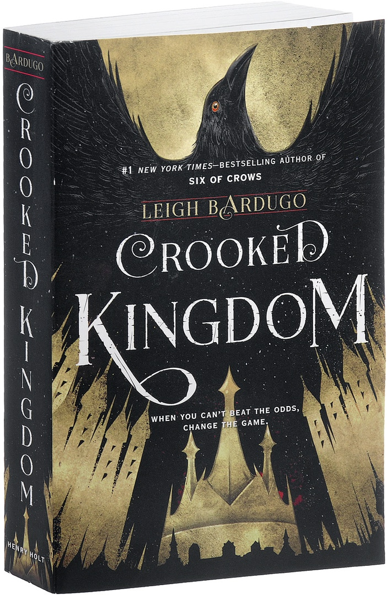

КНИГА «Crooked Kingdom»
«Crooked Kingdom»(«Продажное королевство») - это фантастический роман писательницы Ли Бардуго, опубликованный Генри Холтом и компанией в 2016 году. Действие книги разворачивается в мире, в некотором роде вдохновленном Европой 19-го века. Действие происходит через несколько дней после завершения событий первой книги «Six of Crows» . Сюжет рассказывается от третьего лица шестью разными персонажами.
Краткое содержание второй части: «Продажное королевство» — вторая часть дилогии Ли Бардуго о Казе Бреккере и его команде, вышедшая вскоре после первой. Действие на сей раз происходит только в Кеттердаме — городе, где есть магия, трущобы, игорные дома, мосты, каналы, кладбища, соборы и бордели. Сперва кажется, что Бардуго собралась поведать ту же историю об одарённых юных изгоях, что и в первой книге, сменив лишь декорации. И в первой, и во второй части героям нужно в кратчайшие сроки провернуть сложносочинённые аферы — план изначально строится на сильных сторонах каждого из них, очень важна внезапность, и второго шанса на успех не будет. В прологе гриша по имени Эмиль Ретвенко похищает крылатый шумен. Книга начинается в игорном зале, известном как Club Cumulus, где Джеспер и Нина занимают адвоката Яна Ван Эка, Корнелиса Смита, в то время как Каз и Уайлен ищут в его офисе документы на собственность Ван Эка. Затем Каз планирует похитить беременную молодую жену Ван Эка, Алис, и обменять ее на Инеж, которая находится в плену. Тем временем отец Джеспера, Колм, прибывает в город, поскольку банк Джеспера требует, чтобы он заплатил свои долги. Когда Джеспер идет на встречу с Колмом, на них нападают, но им удается сбежать. Каз говорит отцу Джеспера дать им три дня, чтобы получить деньги, и просит его подождать в отеле в городе. После этого похищение команды проходит успешно, и они меняют жену Ван Эка на Инеж. Однако во время торговли три солдата Шу со сверхчеловеческими способностями нападают на Нину, Джеспера и других Гриш в окрестностях. Им удается уйти после того, как Нина стреляет одному из них в глаз, а Уилан поджигает другого. Команда встречается в их убежище, и Каз показывает, что он купил акции сахарных компаний и планирует саботировать сахарные бункеры Ван Экка с помощью химического долгоносика, тем самым подняв цены на сахар. Нина и Иней уговаривают Каза вывезти оставшихся в городе Гриш на одном из кораблей Ван Эка. Пока Каз и Уилан пытаются украсть нужную печать из дома Ван Эка, Нина и Инеж проникают в сахарные бункеры. Однако все они подвергаются нападению, и выясняется, что Пекка Роллинз является союзником Ван Экка. Пекка также атакует убежище, которое Каз использовал, чтобы спрятать Кувей, где Джеспер и Матиас охраняли его. Все они убегают и встречаются в отеле, где остановился Колм. Нина показывает группе свои странные и жуткие новые способности управлять мертвыми телами; она, Уайлен и Кувэй предполагают, что это могло быть результатом того, что она пережила отказ от jurda parem . Каз составляет другой план и объявляет аукцион по выпуску Кувей. На аукционе Каз маскирует Гришу из посольства под Совет Приливов. Они утверждают, что аукцион является необъективным, потому что Ван Эк дал деньги делегации Шу. Фактически, деньги были направлены воронам путем мошенничества с Торговым советом. Ван Эк арестован, и его репутация разрушена. Им удается инсценировать смерть Кувей и тайно вывезти его из города. Во время работы Маттиас застрелен, а позже умирает. Каз обманывает Пекку, заставляя его поверить, что он похоронил своего сына заживо. Затем Пекка покидает город в поисках своего сына. После ухода Ван Эка Уайлен унаследовал имущество своей семьи. В последних главах Каз находит родителей Инеж и привозит их в Кеттердам. Ему угрожает настоящий Совет Приливов. Инеж угрожает Пекке уйти из его бизнеса в ее первом шаге против людей, действующих в работорговле Кеттердама.
<<Вернуться на главную>>